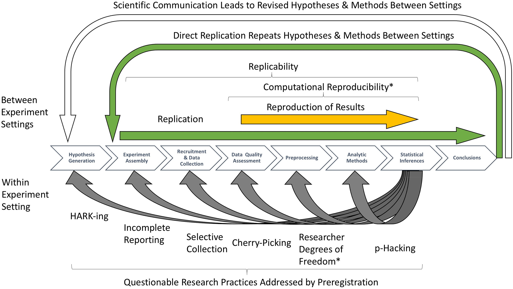

%%{init: {'theme':'forest'}}%%
graph LR
A[Raw Data] -->|Import </br> </br> </tab> | B(Excel)
B -->|Process and </tab> </br> </br> </tab> Analyze| C(SPSS)
C -->|Present| D(PowerPoint)
C -->|Document| E(Word)
classDef green fill:#9f6,stroke:#333,stroke-width:0.5px;
classDef orange fill:#f96,stroke:#333,stroke-width:1px;
classDef white fill:#fff,stroke:#333,stroke-width:1px;
classDef blue fill:#6699cc,stroke:#333,stroke-width:1px;
classDef red fill:#D32737,stroke:#FFF,stroke-width:1.5px;
classDef purple fill:#6A2A60,stroke:#FFF,stroke-width:1.5px;
classDef royalblue fill:#0021A5,stroke:#FFF,stroke-width:1.5px;
class B,C green
class A red
class E royalblue
class D purple
Learn to Code and
Excel in Your Scientific Endeavors
Cultivate capabilities in neuro-data analytics and
high-performance statistical computing
Ryan Mears
Why Code?
Your closest
collaborator is
you six months ago
but you don’t reply to email.
Karl Broman
Reasons to Learn to Code
Adaptability
Flexibility
Integration
Repeatability
Reusability
Sharability
Code, How?
- Adapt example code directly from online documentation
- Flexibly accommodate new datatypes & formats
- Integrate extensive additional code libraries & solutions from others
- Repeat analysis with additional data or with changes to initial steps for reanalyzing the same data
- Reuse with minor modifications for similar data
- Share with others so they can modify, repeat, reuse, and build on code
Code Libraries & APIs
- Code Libraries: collections of pre-written code that can be used to perform tasks. Well designed code is reusable, modular, and efficient, and APIs are the interfaces that allow code libraries to be used.
- APIs (Application Programming Interfaces): rules & protocols allowing users or other applications to interact with a software application.
GUI (Graphical User Interface)
- Intuitiveness and Accessibility
- Limited to Pre-defined Options (i.e., graphical elements)
- API (if it’s not hidden) is constrained by graphical elements and rigidly structured
- Event-Driven Programming (i.e., often a complex sequence and/or combination of user actions trigger code execution - clicks, drags, etc.)
CLI (Command Line Interface)
- Steep Learning Curve (..but intuition/accessibility improving)
- High Flexibility and Control
- Scripting, Customization, and Automation (APIs can be directly called in scripts)
- Efficiency for Experienced Users (i.e., while GUI is linearly scaled, improvements in productivity can scale exponentially with CLI)
Return on Investment for Code
| Advantages | Limitations |
|---|---|
| Graphical Resource Independence | Explicit Command Requirement |
| High Customization | Reduced Usability for Novices |
| High Composability | Increased User Knowledge Dependence |
| Integration & Modularity | |
| Utility of Scale | |
| Searchability |

XKCD1
Data Science Activities
- Data Gathering, Preparation, and Exploration
- Data Representation and Transformation
- Computing with Data
- Data Modeling
- Data Visualization and Presentation
- Science about Data Science
From Donoho, 2017.1
Statistics & Data Science Curricula
Programming
- Structured
- Efficiency
- HPC
Data Formats
- Ragged arrays
- Text data
- Data cleaning
Data Tech
- RDBMS (SQL)
- RegEx
- XML
- Shell commands
- Web scraping
Work Flow
- Reproducibility
- Web publishing
- Revision control
Statistical
- Simulations
- Modern methods
- Visualization
From Hardin et al.,2015,1
Conventional Data Analysis Workflows
SPSS & MS Office
Scripting in
Matlab/Python
%%{init: {'theme':'forest'}}%%
graph LR
A[Raw Data] -->|Import </br> </br> </br> | B(IDE)
B -->|Process </br> </br> </tab> | C(IDE)
C -->|Analyze| B
C -->|Present| D(PowerPoint)
C -->|Document| E(Word)
classDef green fill:#9f6,stroke:#333,stroke-width:0.5px;
classDef orange fill:#f96,stroke:#333,stroke-width:1px;
classDef white fill:#fff,stroke:#333,stroke-width:1px;
classDef blue fill:#6699cc,stroke:#333,stroke-width:1px;
classDef red fill:#D32737,stroke:#FFF,stroke-width:1.5px;
classDef purple fill:#6A2A60,stroke:#FFF,stroke-width:1.5px;
classDef royalblue fill:#0021A5,stroke:#FFF,stroke-width:1.5px;
class B,C green
class A red
class E royalblue
class D purple
Open Science
Promotion of Scientific Transparency & Reliability
Presents Advantages for Research Training
Open Science
1
Computational Reproducibility
graph TD;
A[coarse] ----->|Specificity </tab> </tab> </tab> </tab> </tab> </tab> </tab> </tab> </tab> </tab> </tab> | B[granular]
graph LR;
A[Abstract] ---> |Representativeness </br> </br> </tab> | B[Concrete]
| Computing Environment | Workflow/ Pipeline |
|
| Raw Data & Code |
Analysis Derivatives - derived variables - stats/plots |
Essential Components for Reproducibility
Misalignments between above components
leads to irreproducible results.
Essential components for analysis reproducibility include:
- Computing Environment: The software and hardware environment in which the analysis is conducted
- Workflow/Pipeline: The sequence of steps involved in the analysis
- Raw Data & Code: The data and code used in the analysis
- Analysis Derivatives: The results of the analysis, such as derived variables, statistics, and plots
Computational Reproducibility
graph TD;
A[coarse] ----->|Specificity </tab> </tab> </tab> </tab> </tab> </tab> </tab> </tab> </tab> </tab> </tab> | B[granular]
graph LR;
A[Abstract] ---> |Representativeness </br> </br> </tab> | B[Concrete]
| Computing Environment | Workflow/ Pipeline |
|
| Raw Data & Code |
Analysis Derivatives - derived variables - stats/plots |
Learn how high performance computing (HPC) works:
- Shell scripting for generalizing tasks across hardware/operating systems
- Filesystems
- Computing abstractions
- Operating systems
- Graphics hardware
- Applications/software
Computational Reproducibility
graph TD;
A[coarse] ----->|Specificity </tab> </tab> </tab> </tab> </tab> </tab> </tab> </tab> </tab> </tab> </tab> | B[granular]
graph LR;
A[Abstract] ---> |Representativeness </br> </br> </tab> | B[Concrete]
| Computing Environment | Workflow/ Pipeline |
|
| Raw Data & Code |
Analysis Derivatives - derived variables - stats/plots |
Learn how to design a workflow/pipeline:
- Monitor
- Automate
- Debug
- Document
- Version control
- Share
- Test
- Containerizate
- Scale
Computational Reproducibility
graph TD
A[coarse] ----->|Specificity </tab> </tab> </tab> </tab> </tab> </tab> </tab> </tab> </tab> </tab> </tab> | B[granular]
graph LR;
A[Abstract] ---> |Representativeness </br> </br> </tab> | B[Concrete]
| Computing Environment | Workflow/ Pipeline |
|
| Raw Data & Code |
Analysis Derivatives - derived variables - stats/plots |
- learn how to use this
- dataframe concepts
- data wrangling
- data visualization
- statistical modeling
Computational Reproducibility
graph TD
A[coarse] ----->|Specificity </tab> </tab> </tab> </tab> </tab> </tab> </tab> </tab> </tab> </tab> </tab> | B[granular]
graph LR;
A[Abstract] ---> |Representativeness </br> </br> </tab> | B[Concrete]
| Computing Environment | Workflow/ Pipeline |
|
| Raw Data & Code |
Analysis Derivatives - derived variables -stats/plots |
- Store results of data wrangling in Python/R
- Learn how to save graphs in Python/R
- Record/save and communicate metadata info
- Record/save new variables/data structures created in intermediate pipeline steps
Workflows (Pipelines)
Sequence of Data Processing Steps
Processing Algorithms
Encoding Steps & Format Manipulations
Data Validation Conditions
User-Selected Data/Signal Optimizations
Raw, Intermediate, Final Data Files
Types of Workflows
SPSS & MS Office
Scripting in
Matlab / Python
Hybrid Interactive Python / Matlab
R & RStudio Workflow
%%{init: {'theme':'forest'}}%%
graph LR
A[Raw Data] -->|Import </br> </br> </tab> | B(Excel)
B -->|Process and </tab> </br> </br> </tab> Analyze| C(SPSS)
C -->|Present| D(PowerPoint)
C -->|Document| E(Word)
classDef green fill:#9f6,stroke:#333,stroke-width:0.5px;
classDef orange fill:#f96,stroke:#333,stroke-width:1px;
classDef white fill:#fff,stroke:#333,stroke-width:1px;
classDef blue fill:#6699cc,stroke:#333,stroke-width:1px;
classDef red fill:#D32737,stroke:#FFF,stroke-width:1.5px;
classDef purple fill:#6A2A60,stroke:#FFF,stroke-width:1.5px;
classDef royalblue fill:#0021A5,stroke:#FFF,stroke-width:1.5px;
class B,C green
class A red
class E royalblue
class D purple
%%{init: {'theme':'forest'}}%%
graph LR
A[Raw Data] -->|Import </br> </br> </br> | B(IDE)
B -->|Process </br> </br> </tab> | C(IDE)
C -->|Analyze| B
C -->|Present| D(PowerPoint)
C -->|Document| E(Word)
classDef green fill:#9f6,stroke:#333,stroke-width:0.5px;
classDef orange fill:#f96,stroke:#333,stroke-width:1px;
classDef white fill:#fff,stroke:#333,stroke-width:1px;
classDef blue fill:#6699cc,stroke:#333,stroke-width:1px;
classDef red fill:#D32737,stroke:#FFF,stroke-width:1.5px;
classDef purple fill:#6A2A60,stroke:#FFF,stroke-width:1.5px;
classDef royalblue fill:#0021A5,stroke:#FFF,stroke-width:1.5px;
class B,C green
class A red
class E royalblue
class D purple
%%{init: {'theme':'forest'}}%%
graph LR
A[Raw Data] -->|Import </br> </br> </tab> | B(Jupyter Notebook)
B -->|Process and </tab> </br> </br> </tab> Analyze| C(Jupyter Notebook)
C -->|Present| D(PowerPoint)
C -->|Document| E(Word)
classDef green fill:#9f6,stroke:#333,stroke-width:0.5px;
classDef orange fill:#f96,stroke:#333,stroke-width:1px;
classDef white fill:#fff,stroke:#333,stroke-width:1px;
classDef blue fill:#6699cc,stroke:#333,stroke-width:1px;
classDef red fill:#D32737,stroke:#FFF,stroke-width:1.5px;
classDef purple fill:#6A2A60,stroke:#FFF,stroke-width:1.5px;
classDef royalblue fill:#0021A5,stroke:#FFF,stroke-width:1.5px;
class B,C green
class A red
class E royalblue
class D purple
%%{init: {'theme':'forest'}}%%
graph LR
subgraph RStudio
B[RStudio]-->|Process</tab> </br> </br> </tab>| C[RStudio]
C -->| Visualize</tab> </br> </br> </tab> | D[RStudio]
D -->| Analyze</tab> </br> </br> </tab> | B
end
subgraph Output
D --> F[Documents /</br>Slides /</br>Dashboards /</br>Websites]
end
subgraph Input
A[Raw Data] -->|Import </br> </br> </tab> | B
end
classDef green fill:#9f6,stroke:#333,stroke-width:0.5px;
classDef orange fill:#f96,stroke:#333,stroke-width:1px;
classDef white fill:#fff,stroke:#333,stroke-width:1px;
classDef blue fill:#6699cc,stroke:#333,stroke-width:1px;
classDef red fill:#D32737,stroke:#FFF,stroke-width:1.5px;
classDef purple fill:#6A2A60,stroke:#FFF,stroke-width:1.5px;
classDef royalblue fill:#0021A5,stroke:#FFF,stroke-width:1.5px;
class RStudio,Input,Output white
class B,C green
class A red
class D royalblue
class F purple
Video Behavior Analysis Workflow
%%{init: {'theme':'forest'}}%%
graph LR
subgraph Analysis
s6 --> s7{Inferential Stats}
end
subgraph ETHZ-INS/DLCAnalyzer
s3 --> s4[Data Wrangling </br> Graphing]
s5 --> s6[Data Wrangling]
s6 --> s4
subgraph dlca[</tab> </br> Derivative Variables / Data Visualizations]
s4 --> s5[unsupervised</br> classification</br> and clustering]
end
end
subgraph DeepLabCut
subgraph Training
s1[add keypoints]-->s2[run training]
s2 --> s2a[analyze</br> training]
s2a -->s2
end
subgraph Decoding
s2a --> s3a[add</br> videos]
end
s3a --> s3[import data</br>transform]
end
subgraph Read-in-Data[Raw Data]
s0[import video] --> s1
end
%% Notice that no text in shape are added here instead that is appended further down
%% Comments after double percent signs
classDef green fill:#9f6,stroke:#333,stroke-width:0.5px;
classDef orange fill:#f96,stroke:#333,stroke-width:1px;
classDef white fill:#fff,stroke:#333,stroke-width:1px;
classDef sq stroke:#f66,stroke-width:1px;
classDef blue fill:#6699cc,stroke:#333,stroke-width:1px;
classDef red fill:#D32737,stroke:#FFF,stroke-width:1.5px;
class sq,Analysis green
class ETHZ-INS/DLCAnalyzer orange
class Training,dlca,s0 white
class DeepLabCut white
class Decoding blue
class Read-in-Data red

Video Behavior Analysis Workflow
%%{init: {'theme':'forest'}}%%
graph LR
subgraph Analysis
s6 --> s7{Inferential Stats}
end
subgraph ETHZ-INS/DLCAnalyzer
s3 --> s4[Data Wrangling </br> Graphing]
s5 --> s6[Data Wrangling]
s6 --> s4
subgraph dlca[</tab> </br> Derivative Variables / Data Visualizations]
s4 --> s5[unsupervised</br> classification</br> and clustering]
end
end
subgraph DeepLabCut
subgraph Training
s1[add keypoints]-->s2[run training]
s2 --> s2a[analyze</br> training]
s2a -->s2
end
subgraph Decoding
s2a --> s3a[add</br> videos]
end
s3a --> s3[import data</br>transform]
end
subgraph Read-in-Data[Raw Data]
s0[import video] --> s1
end
%% Notice that no text in shape are added here instead that is appended further down
%% Comments after double percent signs
classDef green fill:#9f6,stroke:#333,stroke-width:0.5px;
classDef orange fill:#f96,stroke:#333,stroke-width:1px;
classDef white fill:#fff,stroke:#333,stroke-width:1px;
classDef sq stroke:#f66,stroke-width:1px;
classDef blue fill:#6699cc,stroke:#333,stroke-width:1px;
classDef red fill:#D32737,stroke:#FFF,stroke-width:1.5px;
class sq,Analysis green
class ETHZ-INS/DLCAnalyzer orange
class Training,dlca,s0 white
class DeepLabCut white
class Decoding blue
class Read-in-Data red
MNE-BIDS-Pipeline
%%{init: {'theme':'forest'}}%%
graph LR;
subgraph Sensor-level-analysis
A[Decode time-by-time </br> using a 'sliding' estimator] --> B[Time-frequency </br> decomposition]
B --> C[Decoding </br> based on </br> common spatial patterns]
C --> D[Noise covariance </br> estimation]
D --> E[Group average </br> at the </br> sensor level]
end
subgraph Preprocessing
l1[Assess </br> channel-wise </br> data quality] --> l2[Estimate </br> head positions]
l2 --> l3[Apply low- and </br> high-pass filters]
l3 --> l4[Temporal regression </br> for artifact removal]
l4 --> l5a[Fit ICA]
l5a --> l6a[Find ICA </br> artifacts]
l4 --> l5b[Extract epochs]
l5b --> l7[Apply ICA]
l6a --> l7 --> l8[Remove epochs </br> based on </br> PTP amplitudes]
l5b --> l6b[Apply SSP]
l4 --> l5c[Compute SSP]
l5c --> l6b[Apply SSP]
l6b --> l8[Remove epochs </br> based on </br> PTP amplitudes]
l8 --> l9[Extract </br> evoked data for </br> each condition]
l9 --> l10[Decode pairs of </br> conditions based on </br> entire epochs]
end
%%l0[Raw Data] --> l1
%%E --> F[Output </br> Statistical </br> Analysis Pipeline]
classDef green fill:#9f6,stroke:#333,stroke-width:0.5px;
classDef orange fill:#f96,stroke:#333,stroke-width:1px;
classDef white fill:#fff,stroke:#333,stroke-width:1px;
classDef sq stroke:#f66,stroke-width:1px;
classDef blue fill:#6699cc,stroke:#333,stroke-width:1px;
classDef red fill:#D32737,stroke:#FFF,stroke-width:1.5px;
class Preprocessing,Sensor-level-analysis white
MNE-Python: Introductory Tutorials
MNE-BIDS-pipeline
Prepare your dataset
MNE-BIDS-Pipeline only works with BIDS-formatted raw data.

MNE-BIDS-pipeline
Prepare your dataset
MNE-BIDS-Pipeline only works with BIDS-formatted raw data.
Create a configuration file
All parameters of the pipeline are controlled via a configuration file. Create a template:
mne_bids_pipeline --create-config=/path/to/custom_config.py
import numpy as np
study_name = "ds000247"
bids_root = f"~/mne_data/{study_name}"
deriv_root = f"~/mne_data/derivatives/mne-bids-pipeline/{study_name}"
subjects = ["0002"]
sessions = ["01"]
task = "rest"
task_is_rest = True
crop_runs = (0, 100) # to speed up computations
ch_types = ["meg"]
spatial_filter = "ssp"
l_freq = 1.0
h_freq = 40.0
rest_epochs_duration = 10
rest_epochs_overlap = 0
epochs_tmin = 0
baseline = NoneMNE-BIDS-pipeline
Prepare your dataset
Create a configuration file
Run the pipeline
A config file controls main pipeline parameters. CLI runs all (or part with an override).
- Re-running a specific stage of the pipeline for additional data
mne_bids_pipeline --config=custom_config.py --steps=preprocessing --subjects=0051,0052,0053
- Running the pipeline with different parameters for a specific stage (e.g., changing filter cutoffs, interpolating bad channels, etc.)
mne_bids_pipeline --config=custom_config.py --steps=preprocessing/ica
- Running the pipeline with different parameters for a specific subject or session
mne_bids_pipeline --config=custom_config.py --steps=preprocessing/ica --session=cond --subjects=0051,0052,0053
Open Science: Finding and Sharing Analysis Code
Why use Git?
- Remote repo: accessed &
updated anytime - Solutions for continuous
merging of sets of changes

Key Feature of Git: Timeline Control
Example from Think Like (a) Git: A Guide for the Perplexed
Key Feature of Git: Timeline Control


XKCD 1
Free Software on GitHub for Psychology & Neuroscience
Python Frameworks
- Anaconda
- PyPi(Python Package Index)
- Jupyter/Pyodide
- Numpy / Scipy
- Pandas/Statsmodels
- Matplotlib/Seaborn
- Keras/TensorFlow
- PyTorch
- Scikit-learn
R
- Tidyverse R
- ROpenSci
- CRAN Task Views
(Comprehensive R Archive Network)
Data Science Skills Essential to Statistical Computation
Grammar of Graphics
 1
1
Leland Wilkinson coined “Grammar of Graphics”.2
Headed APA statistical reporting guideline taskforce.3
Owner of SYSTAT and then became Chief Scientist at SPSS after Systat was sold to SPSS.
SPSS utilizes Grammar of Graphics, but mostly in SPSS syntax or largely hidden from the user at the GUI-level.

Grammar of Graphics
Data: ingredients for plot
Aesthetics: (aes), to make data visible
- x, y: variable along x- & y-axis
- colour & fill: geoms color by data
- group: what group a geom belongs to
- shape: object-type for a plot point
- linetype,size: size scaling
- alpha: geom transparency
Geometric objects: geom_
- geom_point(): scatterplot
- geom_line() & geom_path()*: lines
- geom_boxplot(): box & whiskers plot

- geom_bar(): categorical x
- geom_histogram(): continuous x
- geom_violin(): distribution
- geom_smooth(): data-based line fit
Grammar of Graphics
Facets: facet_wrap() or facet_grid()
Statistics: stat_*(): similar to geoms Coordinates: fitting data onto page coord_cartesian() coord_polar() coord_flip()
Themes: overall visual defaults
- fonts, colors, shapes, outlines

XKCD 1
Data Transformation & Manipulation
SPSS Transformation & Manipulation
SPSS Transformation & Manipulation
Transformation & Manipulation in R
| Person | Satisfaction_Base | Satisfaction_6_Months | Satisfaction_12_Months | Satisfaction_18_Months | Sex |
|---|---|---|---|---|---|
| 1 | 6 | 6 | 5 | 2 | 0 |
| 2 | 7 | 7 | 8 | 4 | 1 |
| 3 | 4 | 6 | 2 | 2 | 1 |
| 4 | 6 | 9 | 4 | 1 | 0 |
| 5 | 6 | 7 | 6 | 6 | 0 |
| Person | Sex | Life_satisfaction | Time |
|---|---|---|---|
| 1 | 0 | Satisfaction_Base | 6 |
| 1 | 0 | Satisfaction_6_Months | 6 |
| 1 | 0 | Satisfaction_12_Months | 5 |
| 1 | 0 | Satisfaction_18_Months | 2 |
| 2 | 1 | Satisfaction_Base | 7 |
| 2 | 1 | Satisfaction_6_Months | 7 |
| 2 | 1 | Satisfaction_12_Months | 8 |
| 2 | 1 | Satisfaction_18_Months | 4 |
| 3 | 1 | Satisfaction_Base | 4 |
| 3 | 1 | Satisfaction_6_Months | 6 |
| 3 | 1 | Satisfaction_12_Months | 2 |
| 3 | 1 | Satisfaction_18_Months | 2 |
| 4 | 0 | Satisfaction_Base | 6 |
| 4 | 0 | Satisfaction_6_Months | 9 |
| 4 | 0 | Satisfaction_12_Months | 4 |
| 4 | 0 | Satisfaction_18_Months | 1 |
| 5 | 0 | Satisfaction_Base | 6 |
| 5 | 0 | Satisfaction_6_Months | 7 |
| 5 | 0 | Satisfaction_12_Months | 6 |
| 5 | 0 | Satisfaction_18_Months | 6 |
| 6 | 1 | Satisfaction_Base | 5 |
| 6 | 1 | Satisfaction_6_Months | 10 |
| 6 | 1 | Satisfaction_12_Months | 4 |
| 6 | 1 | Satisfaction_18_Months | 2 |
| 7 | 0 | Satisfaction_Base | 6 |
| 7 | 0 | Satisfaction_6_Months | 6 |
| 7 | 0 | Satisfaction_12_Months | 4 |
| 7 | 0 | Satisfaction_18_Months | 2 |
| 8 | 0 | Satisfaction_Base | 2 |
| 8 | 0 | Satisfaction_6_Months | 5 |
| 8 | 0 | Satisfaction_12_Months | 4 |
| 8 | 0 | Satisfaction_18_Months | NA |
| 9 | 0 | Satisfaction_Base | 10 |
| 9 | 0 | Satisfaction_6_Months | 9 |
| 9 | 0 | Satisfaction_12_Months | 5 |
| 9 | 0 | Satisfaction_18_Months | 6 |
| 10 | 0 | Satisfaction_Base | 10 |
| 10 | 0 | Satisfaction_6_Months | 10 |
| 10 | 0 | Satisfaction_12_Months | 10 |
| 10 | 0 | Satisfaction_18_Months | 9 |
| 11 | 0 | Satisfaction_Base | 8 |
| 11 | 0 | Satisfaction_6_Months | 8 |
| 11 | 0 | Satisfaction_12_Months | 10 |
| 11 | 0 | Satisfaction_18_Months | 9 |
| 12 | 0 | Satisfaction_Base | 6 |
| 12 | 0 | Satisfaction_6_Months | 10 |
| 12 | 0 | Satisfaction_12_Months | 9 |
| 12 | 0 | Satisfaction_18_Months | 9 |
| 13 | 1 | Satisfaction_Base | 7 |
| 13 | 1 | Satisfaction_6_Months | 8 |
| 13 | 1 | Satisfaction_12_Months | 9 |
| 13 | 1 | Satisfaction_18_Months | 6 |
| 14 | 0 | Satisfaction_Base | 6 |
| 14 | 0 | Satisfaction_6_Months | 7 |
| 14 | 0 | Satisfaction_12_Months | 9 |
| 14 | 0 | Satisfaction_18_Months | 5 |
| 15 | 1 | Satisfaction_Base | 9 |
| 15 | 1 | Satisfaction_6_Months | 10 |
| 15 | 1 | Satisfaction_12_Months | 8 |
| 15 | 1 | Satisfaction_18_Months | 6 |
| 16 | 1 | Satisfaction_Base | 10 |
| 16 | 1 | Satisfaction_6_Months | 10 |
| 16 | 1 | Satisfaction_12_Months | 8 |
| 16 | 1 | Satisfaction_18_Months | 6 |
| 17 | 1 | Satisfaction_Base | 1 |
| 17 | 1 | Satisfaction_6_Months | 2 |
| 17 | 1 | Satisfaction_12_Months | 1 |
| 17 | 1 | Satisfaction_18_Months | NA |
| 18 | 0 | Satisfaction_Base | 5 |
| 18 | 0 | Satisfaction_6_Months | 6 |
| 18 | 0 | Satisfaction_12_Months | 7 |
| 18 | 0 | Satisfaction_18_Months | 3 |
| 19 | 1 | Satisfaction_Base | 6 |
| 19 | 1 | Satisfaction_6_Months | 10 |
| 19 | 1 | Satisfaction_12_Months | 10 |
| 19 | 1 | Satisfaction_18_Months | 6 |
| 20 | 0 | Satisfaction_Base | 5 |
| 20 | 0 | Satisfaction_6_Months | 6 |
| 20 | 0 | Satisfaction_12_Months | NA |
| 20 | 0 | Satisfaction_18_Months | NA |
| 21 | 0 | Satisfaction_Base | 3 |
| 21 | 0 | Satisfaction_6_Months | 7 |
| 21 | 0 | Satisfaction_12_Months | 5 |
| 21 | 0 | Satisfaction_18_Months | 6 |
| 22 | 1 | Satisfaction_Base | 3 |
| 22 | 1 | Satisfaction_6_Months | 4 |
| 22 | 1 | Satisfaction_12_Months | 4 |
| 22 | 1 | Satisfaction_18_Months | 2 |
| 23 | 0 | Satisfaction_Base | 7 |
| 23 | 0 | Satisfaction_6_Months | 6 |
| 23 | 0 | Satisfaction_12_Months | 4 |
| 23 | 0 | Satisfaction_18_Months | 2 |
| 24 | 0 | Satisfaction_Base | 3 |
| 24 | 0 | Satisfaction_6_Months | 4 |
| 24 | 0 | Satisfaction_12_Months | 2 |
| 24 | 0 | Satisfaction_18_Months | NA |
| 28 | 1 | Satisfaction_Base | 9 |
| 28 | 1 | Satisfaction_6_Months | 10 |
| 28 | 1 | Satisfaction_12_Months | 8 |
| 28 | 1 | Satisfaction_18_Months | NA |
| 29 | 1 | Satisfaction_Base | 8 |
| 29 | 1 | Satisfaction_6_Months | 10 |
| 29 | 1 | Satisfaction_12_Months | 9 |
| 29 | 1 | Satisfaction_18_Months | 7 |
| 30 | 0 | Satisfaction_Base | 8 |
| 30 | 0 | Satisfaction_6_Months | 7 |
| 30 | 0 | Satisfaction_12_Months | 7 |
| 30 | 0 | Satisfaction_18_Months | 3 |
| 31 | 0 | Satisfaction_Base | 7 |
| 31 | 0 | Satisfaction_6_Months | 7 |
| 31 | 0 | Satisfaction_12_Months | 6 |
| 31 | 0 | Satisfaction_18_Months | 3 |
| 32 | 0 | Satisfaction_Base | 10 |
| 32 | 0 | Satisfaction_6_Months | 8 |
| 32 | 0 | Satisfaction_12_Months | NA |
| 32 | 0 | Satisfaction_18_Months | NA |
| 33 | 1 | Satisfaction_Base | 7 |
| 33 | 1 | Satisfaction_6_Months | 6 |
| 33 | 1 | Satisfaction_12_Months | 5 |
| 33 | 1 | Satisfaction_18_Months | 3 |
| 34 | 0 | Satisfaction_Base | 5 |
| 34 | 0 | Satisfaction_6_Months | 7 |
| 34 | 0 | Satisfaction_12_Months | 7 |
| 34 | 0 | Satisfaction_18_Months | 4 |
| 38 | 0 | Satisfaction_Base | 5 |
| 38 | 0 | Satisfaction_6_Months | 7 |
| 38 | 0 | Satisfaction_12_Months | 4 |
| 38 | 0 | Satisfaction_18_Months | 4 |
| 39 | 0 | Satisfaction_Base | 7 |
| 39 | 0 | Satisfaction_6_Months | 9 |
| 39 | 0 | Satisfaction_12_Months | 7 |
| 39 | 0 | Satisfaction_18_Months | 6 |
| 40 | 0 | Satisfaction_Base | 4 |
| 40 | 0 | Satisfaction_6_Months | 5 |
| 40 | 0 | Satisfaction_12_Months | 5 |
| 40 | 0 | Satisfaction_18_Months | 1 |
| 41 | 1 | Satisfaction_Base | 3 |
| 41 | 1 | Satisfaction_6_Months | 4 |
| 41 | 1 | Satisfaction_12_Months | 3 |
| 41 | 1 | Satisfaction_18_Months | 1 |
| 44 | 1 | Satisfaction_Base | 4 |
| 44 | 1 | Satisfaction_6_Months | 6 |
| 44 | 1 | Satisfaction_12_Months | 7 |
| 44 | 1 | Satisfaction_18_Months | 3 |
| 45 | 1 | Satisfaction_Base | 8 |
| 45 | 1 | Satisfaction_6_Months | 5 |
| 45 | 1 | Satisfaction_12_Months | 4 |
| 45 | 1 | Satisfaction_18_Months | 3 |
| 46 | 0 | Satisfaction_Base | 10 |
| 46 | 0 | Satisfaction_6_Months | 4 |
| 46 | 0 | Satisfaction_12_Months | 4 |
| 46 | 0 | Satisfaction_18_Months | 5 |
| 47 | 0 | Satisfaction_Base | 10 |
| 47 | 0 | Satisfaction_6_Months | 10 |
| 47 | 0 | Satisfaction_12_Months | 8 |
| 47 | 0 | Satisfaction_18_Months | 6 |
| 48 | 1 | Satisfaction_Base | 4 |
| 48 | 1 | Satisfaction_6_Months | 5 |
| 48 | 1 | Satisfaction_12_Months | 4 |
| 48 | 1 | Satisfaction_18_Months | 1 |
| 49 | 0 | Satisfaction_Base | 2 |
| 49 | 0 | Satisfaction_6_Months | 4 |
| 49 | 0 | Satisfaction_12_Months | 1 |
| 49 | 0 | Satisfaction_18_Months | NA |
| 50 | 1 | Satisfaction_Base | 10 |
| 50 | 1 | Satisfaction_6_Months | 10 |
| 50 | 1 | Satisfaction_12_Months | 9 |
| 50 | 1 | Satisfaction_18_Months | 7 |
| 51 | 0 | Satisfaction_Base | 2 |
| 51 | 0 | Satisfaction_6_Months | 4 |
| 51 | 0 | Satisfaction_12_Months | 4 |
| 51 | 0 | Satisfaction_18_Months | 1 |
| 52 | 1 | Satisfaction_Base | 9 |
| 52 | 1 | Satisfaction_6_Months | 10 |
| 52 | 1 | Satisfaction_12_Months | 8 |
| 52 | 1 | Satisfaction_18_Months | 5 |
| 53 | 1 | Satisfaction_Base | 9 |
| 53 | 1 | Satisfaction_6_Months | 10 |
| 53 | 1 | Satisfaction_12_Months | 8 |
| 53 | 1 | Satisfaction_18_Months | 5 |
| 54 | 1 | Satisfaction_Base | 4 |
| 54 | 1 | Satisfaction_6_Months | 4 |
| 54 | 1 | Satisfaction_12_Months | 3 |
| 54 | 1 | Satisfaction_18_Months | 3 |
| 55 | 0 | Satisfaction_Base | 6 |
| 55 | 0 | Satisfaction_6_Months | 10 |
| 55 | 0 | Satisfaction_12_Months | 6 |
| 55 | 0 | Satisfaction_18_Months | 2 |
| 56 | 1 | Satisfaction_Base | 9 |
| 56 | 1 | Satisfaction_6_Months | 9 |
| 56 | 1 | Satisfaction_12_Months | 5 |
| 56 | 1 | Satisfaction_18_Months | 4 |
| 57 | 1 | Satisfaction_Base | 6 |
| 57 | 1 | Satisfaction_6_Months | 6 |
| 57 | 1 | Satisfaction_12_Months | 7 |
| 57 | 1 | Satisfaction_18_Months | 9 |
| 58 | 0 | Satisfaction_Base | 5 |
| 58 | 0 | Satisfaction_6_Months | 4 |
| 58 | 0 | Satisfaction_12_Months | 5 |
| 58 | 0 | Satisfaction_18_Months | 1 |
| 59 | 1 | Satisfaction_Base | 8 |
| 59 | 1 | Satisfaction_6_Months | 8 |
| 59 | 1 | Satisfaction_12_Months | 9 |
| 59 | 1 | Satisfaction_18_Months | 4 |
| 60 | 1 | Satisfaction_Base | 5 |
| 60 | 1 | Satisfaction_6_Months | 6 |
| 60 | 1 | Satisfaction_12_Months | 7 |
| 60 | 1 | Satisfaction_18_Months | 1 |
| 61 | 0 | Satisfaction_Base | 7 |
| 61 | 0 | Satisfaction_6_Months | 10 |
| 61 | 0 | Satisfaction_12_Months | 10 |
| 61 | 0 | Satisfaction_18_Months | 4 |
| 62 | 1 | Satisfaction_Base | 8 |
| 62 | 1 | Satisfaction_6_Months | 9 |
| 62 | 1 | Satisfaction_12_Months | 8 |
| 62 | 1 | Satisfaction_18_Months | 8 |
| 63 | 1 | Satisfaction_Base | 8 |
| 63 | 1 | Satisfaction_6_Months | 9 |
| 63 | 1 | Satisfaction_12_Months | 7 |
| 63 | 1 | Satisfaction_18_Months | 4 |
| 64 | 0 | Satisfaction_Base | 4 |
| 64 | 0 | Satisfaction_6_Months | 5 |
| 64 | 0 | Satisfaction_12_Months | 4 |
| 64 | 0 | Satisfaction_18_Months | 3 |
| 65 | 0 | Satisfaction_Base | 10 |
| 65 | 0 | Satisfaction_6_Months | 8 |
| 65 | 0 | Satisfaction_12_Months | 9 |
| 65 | 0 | Satisfaction_18_Months | 4 |
| 66 | 1 | Satisfaction_Base | 6 |
| 66 | 1 | Satisfaction_6_Months | 9 |
| 66 | 1 | Satisfaction_12_Months | 8 |
| 66 | 1 | Satisfaction_18_Months | 7 |
| 67 | 0 | Satisfaction_Base | 7 |
| 67 | 0 | Satisfaction_6_Months | 9 |
| 67 | 0 | Satisfaction_12_Months | 7 |
| 67 | 0 | Satisfaction_18_Months | 6 |
| 68 | 0 | Satisfaction_Base | 3 |
| 68 | 0 | Satisfaction_6_Months | 3 |
| 68 | 0 | Satisfaction_12_Months | 3 |
| 68 | 0 | Satisfaction_18_Months | NA |
| 69 | 0 | Satisfaction_Base | 8 |
| 69 | 0 | Satisfaction_6_Months | 9 |
| 69 | 0 | Satisfaction_12_Months | 10 |
| 69 | 0 | Satisfaction_18_Months | 8 |
| 70 | 1 | Satisfaction_Base | 3 |
| 70 | 1 | Satisfaction_6_Months | 3 |
| 70 | 1 | Satisfaction_12_Months | 4 |
| 70 | 1 | Satisfaction_18_Months | 3 |
| 71 | 1 | Satisfaction_Base | 8 |
| 71 | 1 | Satisfaction_6_Months | 10 |
| 71 | 1 | Satisfaction_12_Months | 7 |
| 71 | 1 | Satisfaction_18_Months | 5 |
| 72 | 1 | Satisfaction_Base | 10 |
| 72 | 1 | Satisfaction_6_Months | 7 |
| 72 | 1 | Satisfaction_12_Months | 5 |
| 72 | 1 | Satisfaction_18_Months | 3 |
| 73 | 0 | Satisfaction_Base | 10 |
| 73 | 0 | Satisfaction_6_Months | 10 |
| 73 | 0 | Satisfaction_12_Months | 9 |
| 73 | 0 | Satisfaction_18_Months | 6 |
| 74 | 0 | Satisfaction_Base | 5 |
| 74 | 0 | Satisfaction_6_Months | 6 |
| 74 | 0 | Satisfaction_12_Months | 4 |
| 74 | 0 | Satisfaction_18_Months | 1 |
| 75 | 0 | Satisfaction_Base | 10 |
| 75 | 0 | Satisfaction_6_Months | 10 |
| 75 | 0 | Satisfaction_12_Months | 6 |
| 75 | 0 | Satisfaction_18_Months | NA |
| 76 | 0 | Satisfaction_Base | 10 |
| 76 | 0 | Satisfaction_6_Months | 9 |
| 76 | 0 | Satisfaction_12_Months | 7 |
| 76 | 0 | Satisfaction_18_Months | 7 |
| 77 | 0 | Satisfaction_Base | 5 |
| 77 | 0 | Satisfaction_6_Months | 7 |
| 77 | 0 | Satisfaction_12_Months | 4 |
| 77 | 0 | Satisfaction_18_Months | 2 |
| 78 | 0 | Satisfaction_Base | 3 |
| 78 | 0 | Satisfaction_6_Months | 5 |
| 78 | 0 | Satisfaction_12_Months | 3 |
| 78 | 0 | Satisfaction_18_Months | NA |
| 79 | 1 | Satisfaction_Base | 10 |
| 79 | 1 | Satisfaction_6_Months | 9 |
| 79 | 1 | Satisfaction_12_Months | 8 |
| 79 | 1 | Satisfaction_18_Months | NA |
| 80 | 0 | Satisfaction_Base | 5 |
| 80 | 0 | Satisfaction_6_Months | 10 |
| 80 | 0 | Satisfaction_12_Months | 6 |
| 80 | 0 | Satisfaction_18_Months | 5 |
| 81 | 0 | Satisfaction_Base | 5 |
| 81 | 0 | Satisfaction_6_Months | 6 |
| 81 | 0 | Satisfaction_12_Months | 9 |
| 81 | 0 | Satisfaction_18_Months | 4 |
| 82 | 0 | Satisfaction_Base | 9 |
| 82 | 0 | Satisfaction_6_Months | 6 |
| 82 | 0 | Satisfaction_12_Months | 7 |
| 82 | 0 | Satisfaction_18_Months | 4 |
| 83 | 1 | Satisfaction_Base | 5 |
| 83 | 1 | Satisfaction_6_Months | 5 |
| 83 | 1 | Satisfaction_12_Months | 4 |
| 83 | 1 | Satisfaction_18_Months | 1 |
| 84 | 1 | Satisfaction_Base | 8 |
| 84 | 1 | Satisfaction_6_Months | 6 |
| 84 | 1 | Satisfaction_12_Months | 2 |
| 84 | 1 | Satisfaction_18_Months | 2 |
| 85 | 1 | Satisfaction_Base | 10 |
| 85 | 1 | Satisfaction_6_Months | 9 |
| 85 | 1 | Satisfaction_12_Months | 6 |
| 85 | 1 | Satisfaction_18_Months | NA |
| 86 | 1 | Satisfaction_Base | 7 |
| 86 | 1 | Satisfaction_6_Months | 7 |
| 86 | 1 | Satisfaction_12_Months | 6 |
| 86 | 1 | Satisfaction_18_Months | 3 |
| 87 | 0 | Satisfaction_Base | 8 |
| 87 | 0 | Satisfaction_6_Months | 7 |
| 87 | 0 | Satisfaction_12_Months | 9 |
| 87 | 0 | Satisfaction_18_Months | 4 |
| 88 | 0 | Satisfaction_Base | 10 |
| 88 | 0 | Satisfaction_6_Months | 9 |
| 88 | 0 | Satisfaction_12_Months | 7 |
| 88 | 0 | Satisfaction_18_Months | 7 |
| 89 | 0 | Satisfaction_Base | 7 |
| 89 | 0 | Satisfaction_6_Months | 6 |
| 89 | 0 | Satisfaction_12_Months | 6 |
| 89 | 0 | Satisfaction_18_Months | 3 |
| 90 | 1 | Satisfaction_Base | 5 |
| 90 | 1 | Satisfaction_6_Months | 4 |
| 90 | 1 | Satisfaction_12_Months | 4 |
| 90 | 1 | Satisfaction_18_Months | 2 |
| 91 | 1 | Satisfaction_Base | 10 |
| 91 | 1 | Satisfaction_6_Months | 8 |
| 91 | 1 | Satisfaction_12_Months | 9 |
| 91 | 1 | Satisfaction_18_Months | 5 |
| 92 | 0 | Satisfaction_Base | 7 |
| 92 | 0 | Satisfaction_6_Months | 6 |
| 92 | 0 | Satisfaction_12_Months | 7 |
| 92 | 0 | Satisfaction_18_Months | 4 |
| 93 | 0 | Satisfaction_Base | 10 |
| 93 | 0 | Satisfaction_6_Months | 7 |
| 93 | 0 | Satisfaction_12_Months | 9 |
| 93 | 0 | Satisfaction_18_Months | 7 |
| 94 | 1 | Satisfaction_Base | 10 |
| 94 | 1 | Satisfaction_6_Months | 10 |
| 94 | 1 | Satisfaction_12_Months | 8 |
| 94 | 1 | Satisfaction_18_Months | 7 |
| 95 | 1 | Satisfaction_Base | 7 |
| 95 | 1 | Satisfaction_6_Months | 9 |
| 95 | 1 | Satisfaction_12_Months | 5 |
| 95 | 1 | Satisfaction_18_Months | 5 |
| 96 | 0 | Satisfaction_Base | 3 |
| 96 | 0 | Satisfaction_6_Months | 3 |
| 96 | 0 | Satisfaction_12_Months | 4 |
| 96 | 0 | Satisfaction_18_Months | 8 |
| 97 | 1 | Satisfaction_Base | 10 |
| 97 | 1 | Satisfaction_6_Months | 10 |
| 97 | 1 | Satisfaction_12_Months | 5 |
| 97 | 1 | Satisfaction_18_Months | NA |
| 98 | 0 | Satisfaction_Base | 6 |
| 98 | 0 | Satisfaction_6_Months | 7 |
| 98 | 0 | Satisfaction_12_Months | 4 |
| 98 | 0 | Satisfaction_18_Months | 1 |
| 99 | 1 | Satisfaction_Base | 6 |
| 99 | 1 | Satisfaction_6_Months | 5 |
| 99 | 1 | Satisfaction_12_Months | 4 |
| 99 | 1 | Satisfaction_18_Months | NA |
| 100 | 1 | Satisfaction_Base | 8 |
| 100 | 1 | Satisfaction_6_Months | 9 |
| 100 | 1 | Satisfaction_12_Months | 7 |
| 100 | 1 | Satisfaction_18_Months | 2 |
| 101 | 0 | Satisfaction_Base | 6 |
| 101 | 0 | Satisfaction_6_Months | 8 |
| 101 | 0 | Satisfaction_12_Months | 9 |
| 101 | 0 | Satisfaction_18_Months | 3 |
| 102 | 1 | Satisfaction_Base | 7 |
| 102 | 1 | Satisfaction_6_Months | 8 |
| 102 | 1 | Satisfaction_12_Months | 5 |
| 102 | 1 | Satisfaction_18_Months | NA |
| 103 | 1 | Satisfaction_Base | 9 |
| 103 | 1 | Satisfaction_6_Months | 8 |
| 103 | 1 | Satisfaction_12_Months | 7 |
| 103 | 1 | Satisfaction_18_Months | 6 |
| 104 | 1 | Satisfaction_Base | 7 |
| 104 | 1 | Satisfaction_6_Months | 8 |
| 104 | 1 | Satisfaction_12_Months | 4 |
| 104 | 1 | Satisfaction_18_Months | 3 |
| 105 | 0 | Satisfaction_Base | 10 |
| 105 | 0 | Satisfaction_6_Months | 10 |
| 105 | 0 | Satisfaction_12_Months | 8 |
| 105 | 0 | Satisfaction_18_Months | 4 |
| 106 | 0 | Satisfaction_Base | 10 |
| 106 | 0 | Satisfaction_6_Months | 4 |
| 106 | 0 | Satisfaction_12_Months | 2 |
| 106 | 0 | Satisfaction_18_Months | NA |
| 107 | 1 | Satisfaction_Base | 8 |
| 107 | 1 | Satisfaction_6_Months | 8 |
| 107 | 1 | Satisfaction_12_Months | 4 |
| 107 | 1 | Satisfaction_18_Months | 5 |
| 108 | 1 | Satisfaction_Base | 3 |
| 108 | 1 | Satisfaction_6_Months | 4 |
| 108 | 1 | Satisfaction_12_Months | 4 |
| 108 | 1 | Satisfaction_18_Months | 3 |
| 109 | 0 | Satisfaction_Base | 7 |
| 109 | 0 | Satisfaction_6_Months | 6 |
| 109 | 0 | Satisfaction_12_Months | 6 |
| 109 | 0 | Satisfaction_18_Months | 3 |
| 110 | 0 | Satisfaction_Base | 9 |
| 110 | 0 | Satisfaction_6_Months | 7 |
| 110 | 0 | Satisfaction_12_Months | 8 |
| 110 | 0 | Satisfaction_18_Months | 6 |
| 111 | 0 | Satisfaction_Base | 7 |
| 111 | 0 | Satisfaction_6_Months | 8 |
| 111 | 0 | Satisfaction_12_Months | 7 |
| 111 | 0 | Satisfaction_18_Months | 8 |
| 112 | 1 | Satisfaction_Base | 5 |
| 112 | 1 | Satisfaction_6_Months | 3 |
| 112 | 1 | Satisfaction_12_Months | 4 |
| 112 | 1 | Satisfaction_18_Months | NA |
| 113 | 0 | Satisfaction_Base | 7 |
| 113 | 0 | Satisfaction_6_Months | 4 |
| 113 | 0 | Satisfaction_12_Months | 5 |
| 113 | 0 | Satisfaction_18_Months | 3 |
| 114 | 1 | Satisfaction_Base | 3 |
| 114 | 1 | Satisfaction_6_Months | 2 |
| 114 | 1 | Satisfaction_12_Months | 1 |
| 114 | 1 | Satisfaction_18_Months | NA |
| 115 | 1 | Satisfaction_Base | 5 |
| 115 | 1 | Satisfaction_6_Months | 5 |
| 115 | 1 | Satisfaction_12_Months | 3 |
| 115 | 1 | Satisfaction_18_Months | NA |
| 116 | 1 | Satisfaction_Base | 7 |
| 116 | 1 | Satisfaction_6_Months | 9 |
| 116 | 1 | Satisfaction_12_Months | 5 |
| 116 | 1 | Satisfaction_18_Months | 2 |
| 117 | 1 | Satisfaction_Base | 7 |
| 117 | 1 | Satisfaction_6_Months | 6 |
| 117 | 1 | Satisfaction_12_Months | 6 |
| 117 | 1 | Satisfaction_18_Months | 4 |
| 118 | 1 | Satisfaction_Base | 3 |
| 118 | 1 | Satisfaction_6_Months | 4 |
| 118 | 1 | Satisfaction_12_Months | 4 |
| 118 | 1 | Satisfaction_18_Months | 1 |
| 119 | 1 | Satisfaction_Base | 8 |
| 119 | 1 | Satisfaction_6_Months | 4 |
| 119 | 1 | Satisfaction_12_Months | 2 |
| 119 | 1 | Satisfaction_18_Months | 1 |
| 120 | 1 | Satisfaction_Base | 3 |
| 120 | 1 | Satisfaction_6_Months | 6 |
| 120 | 1 | Satisfaction_12_Months | 1 |
| 120 | 1 | Satisfaction_18_Months | 7 |
| 121 | 1 | Satisfaction_Base | 6 |
| 121 | 1 | Satisfaction_6_Months | 6 |
| 121 | 1 | Satisfaction_12_Months | 6 |
| 121 | 1 | Satisfaction_18_Months | 7 |
| 122 | 1 | Satisfaction_Base | 5 |
| 122 | 1 | Satisfaction_6_Months | 10 |
| 122 | 1 | Satisfaction_12_Months | 2 |
| 122 | 1 | Satisfaction_18_Months | NA |
| 123 | 0 | Satisfaction_Base | 5 |
| 123 | 0 | Satisfaction_6_Months | 6 |
| 123 | 0 | Satisfaction_12_Months | 2 |
| 123 | 0 | Satisfaction_18_Months | 1 |


READ -> WRANGLE -+-> TRANSFORM -+----+--> COMMUNICATE
^ | /
| v /
MODEL <-- VISUALIZE_/Programs must be written for humans to read, and only incidentally for computers to execute.1


Tidyverse Concepts

Tidyverse Concepts

Tidyverse Concepts

Tidyverse Concepts
- Many operations are essentially the same as SQL
- Algorithms are based on set theory, relational algebra, and relational calculus
- SQL is a declarative language, R and tidyverse R is an imperative/functional language
- Methods for data wrangling are more flexible and powerful than SQL
- Similar to SQL but without the focus on explicit predefined referencing and contraints of database design
- Data Frames are the primary data structure
Tabular Data in Python & Matlab
- Pandas in Python
- Data Frames
- Data Wrangling
read_csv()sort_values()sort_index()reset_index()set_index()loc[]iloc[]at[]iat[]isin()query()melt()stack()unstack()
- Split-Apply-Combine
groupby()pivot_table()
- Column-based computation
eval()assign()pipe()apply()applymap()map()
- DataFrame Joins
merge()join()concat()
- Data Wrangling
- Data Frames
- Data Tables in Matlab
- Data Tables
- Split-Apply-Combine
- Column-based computation
- Table Joins
How to Develop Coding Capabilities
UF & Community Resources
Carpentries: R for Reproducible Scientific Analysis
Carpentries: Functional Neuroimaging Analysis in Python
DataCamp: Reconstructing Brain MRI Images Using Deep Learning (Convolutional Autoencoder)
DataCamp: Introduction to Deep Learning with Keras
DataCamp: How to Learn Deep Learning in 2024 - A Complete Guide
Online Courses, Tutorials, Free Books!


Other Opportunities
DataCamp, Coursera
Code Review & Collaboration
Mentorship & Coaching
Share & Teach
Hackathons & Competitions
ChatGPT and Github Copilot
RStudio: Github Copilot
Setup RStudio Autocomplete suggestions
- simple/specific comment
- Copilot’s code suggestion
- Status(waiting/received/none)
Rahman & Wong (2023)
ChatGPT Coding Prompts
General coding workflows
- Code debugging
- Code explanation
- Code optimization
- Code simplification
- Code translation
- Code quality and testing
- Compare function speeds
- Write unit tests
Analysis workflows
- Python/R analysis
- Data generation/cleaning
- Data analysis workflow in pandas/tidyverse R
- Data Aggregation
- Data Merging
Data visualization
- Data visualization in Python/R
- Creating plots
- Annotating/formatting
- Changing plot themes
Machine learning workflows
- General machine learning
- Python/R machine learning
Time series analysis
- Python/R time series analysis
Natural language processing workflows
Conceptual & career oriented prompts